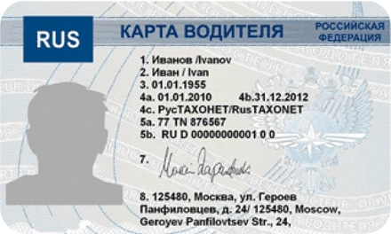
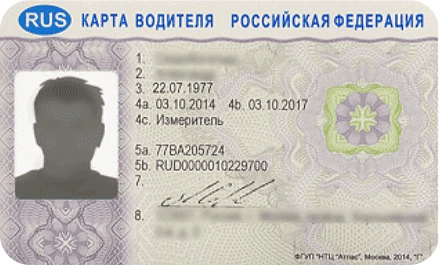

Распечатаем документы, сделаем фото на паспорт и изготовим карты для тахографа онлайн.
Написать сообщение
Используется на Европейских тахографах. Чаще всего установлены штатно на иномарках (MAN, Iveco, DAF и т.д.). Без пин-кода. С этой картой тахографа можно ездить в РФ и за рубежом.

Используется только на российских тахографах. Самая популярная карта в РФ. С пин-кодом. Можно ездить только по России. За рубежом он недействителен.
Тихвин, 3 микрорайон, дом 1 (справа от второго подъезда)
Пн–Пт: 09:00 – 19:00 Сб: 10:00 – 18:00
Сб: 10:00 – 18:00
Вс: Выходной
Перерыв: 14:30 - 16:00